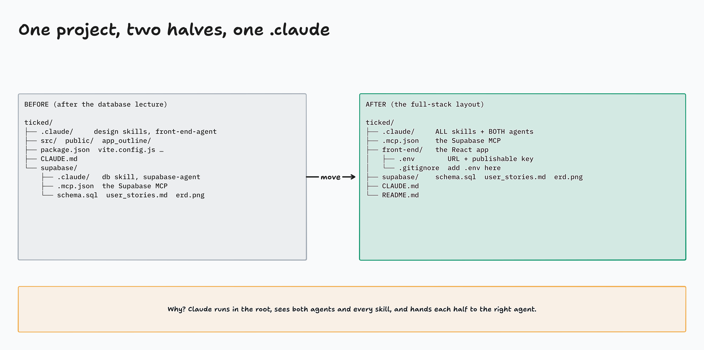
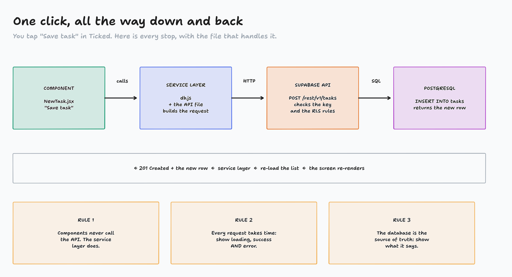
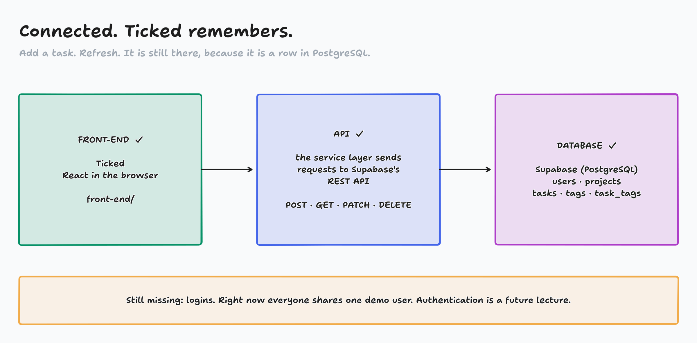

Building Applications · Full-Stack Apps · Part 2 of 2
Connecting it all
Ticked sends the requests Postman sent. Claude's two agents do the wiring; you approve and check.
Today
One project folder: front-end/ + supabase/ + one .claude/
Keep the key secret: .env and .gitignore
Hand Claude the job: two sub-agents, one orchestrator
Review its plan, then watch it build and test
Add a task. Refresh. It's still there.

diagrams/FS2-02-folders.tldr
Live: Claude restructures the project
# terminal: cd ~/demos/ticked → claude
Restructure this project into the full-stack layout below. Move files only: don't change any code.
ticked/
├── .claude/ skills/ and agents/ from BOTH ./.claude and ./supabase/.claude, merged
├── .mcp.json moved up from supabase/
├── front-end/ everything that belongs to the React app (src, public, app_outline,
│ index.html, package files, vite and lint config, .gitignore, node_modules)
├── supabase/ schema.sql, user_stories.md and the ERD screenshot
├── CLAUDE.md update it to describe both halves
└── README.md
Show me the plan (what moves where) first and wait for my approval.
Then: exit, claude again → /mcp → /agents
Live: the key goes in .env, and .env stays off GitHub
# front-end/.env (next to package.json)
VITE_SUPABASE_URL=https://<id>.supabase.co
VITE_SUPABASE_ANON_KEY=sb_publishable_…
# .gitignore (project root)
.env
Vite only shares names that start with VITE_
Code reads them with import.meta.env.VITE_SUPABASE_URL
Vite reads .env when it starts: restart npm run dev
Publishable key only. The secret key never goes in a VITE_ variable.
Check: git status must not list .env.
The prompt (Opus)
My current front-end application is working as desired and I want to preserve the existing UI
and user experience along with my supabase projects database structure. Now I would like to
integrate these two projects as one (expose API endpoints and connect UI actions within the React
app to the Supabase project) to create a full stack application.
I want you to use the subagents of front-end-agent and supabase-agent to communicate with one
another to accomplish this task while using you as their main orchestrator for this task.
Do not change any fundamental functionality and/or data without my approval.
**DO NOT IMPLEMENT AUTHENTICATION NOR AUTHORIZATION PRINCIPLES**
Once the Sub-Agents return a completed action use both the Playwright MCP and the Supabase MCP to
walk through the applications features yourself and test them out to ensure a successful integration.

diagrams/FS2-01-request-flow.tldr
Review the plan before you approve
Look for
A service layer: one file that knows the URL and key
Which files change: mostly the data file
Keys from import.meta.env
No new tables, no login, no RLS changes
Likely questions
user_id? Use the Demo User from Postman
Seed data? Remove it: the database is the truth
supabase-js or fetch? supabase-js (logins use it next), in one service file
Something wrong? Correct it in your reply, before any code changes.
Activity: Where did it break?
Claude's agents are wiring Ticked
Meanwhile: real bug reports from apps like ours
In chat on "go": FRONT-END, API, DATABASE or GIT
Then: what's the fix?
Page: activity-where-did-it-break/
Watch Claude test its own work
Playwright MCP
Opens Ticked, adds a project and a task, ticks it, deletes it. Like a user would.
Supabase MCP
Reads the tables after each step: did the row really change?
Then read its summary, especially the assumptions.

diagrams/FS2-03-connected.tldr
Delegate the typing, not the responsibility
You approved the folder move, the plan and every MCP call
You kept the key in .env and .env out of git
Claude tested; you refreshed and checked the Table Editor
Commit now: git status (no .env!), then commit and push
Ticked is a full-stack app: React → service layer → Supabase API → PostgreSQL.
Homework, Part II
Priority 1, Netflix Clone III: make it full-stack
Priority 2, your own app: give it memory. Same steps as today.
Priority 3, FreeCodeCamp: 100 steps of the JavaScript certification